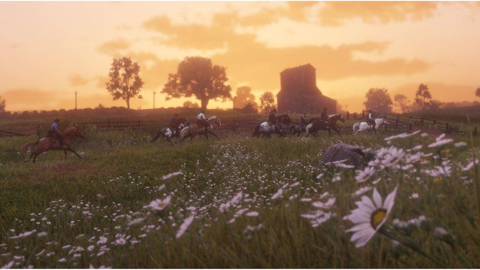
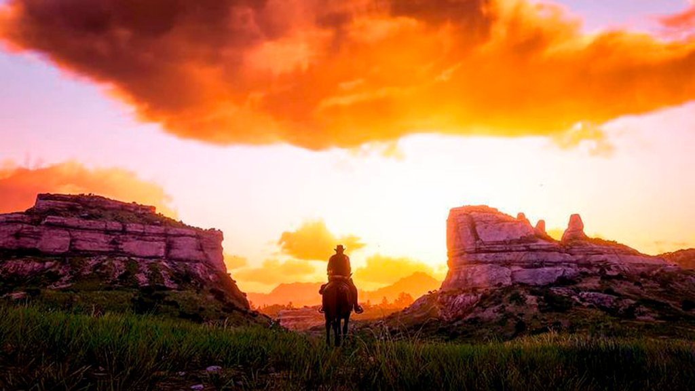

Introdução
Red Dead Redemption 2, criado e publicado pela Rockstar Games em 2018, é um jogo de ação e aventura que se destaca como o terceiro capítulo da série e uma prequela direta de Red Dead Redemption. A narrativa se desenrola nos Estados Unidos do século XIX, acompanhando Arthur Morgan, um membro de uma gangue que se depara com os dilemas da modernização e a pressão das autoridades.
A mecânica do jogo mescla perspectivas em primeira e terceira pessoa, possibilitando a exploração de um amplo mundo aberto, envolvimento em tiroteios, caçadas e interações diversas. Decisões éticas moldam a jornada de Arthur, impactando sua honra, e um sistema de recompensas influencia as respostas das autoridades e caçadores diante das ações do jogador.
O jogo gerou enorme expectativa, quebrando recordes de vendas e receita. Ultrapassou as vendas do jogo anterior e recebeu elogios da crítica pela sua narrativa envolvente, mundo aberto detalhado e qualidade excepcional. Além disso, foi agraciado com diversos prêmios, incluindo o título de Jogo do Ano.